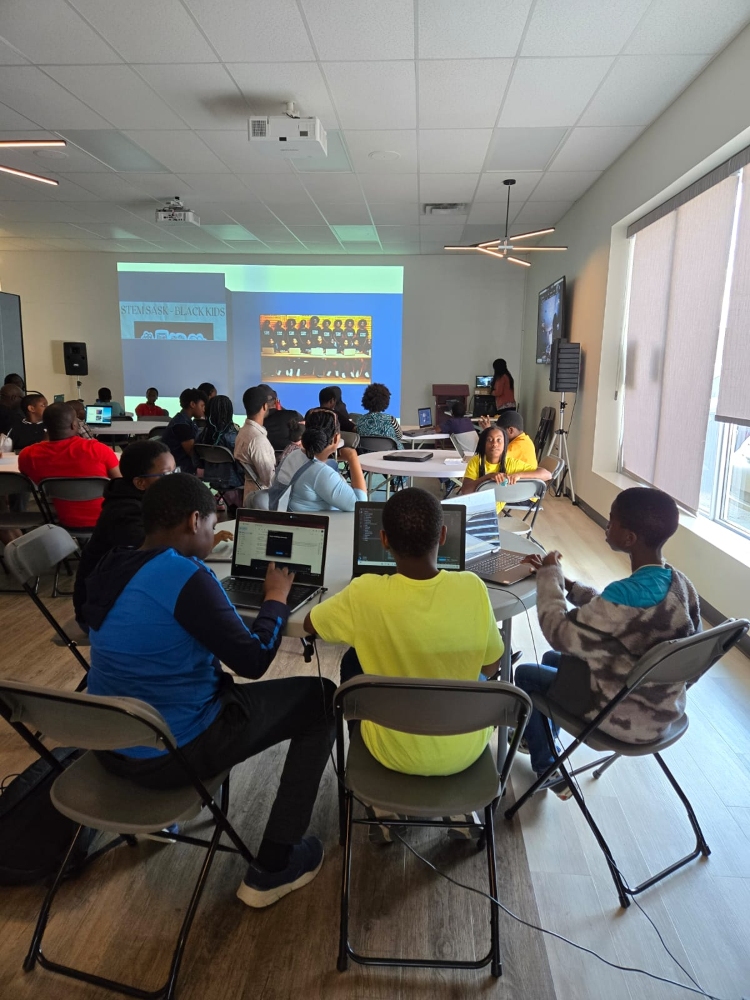

Are you ready to ignite your child's passion for Science, Technology,
Engineering, and Math (STEM)?
At STEMSASKB, we empower Black children and teens through accessible and engaging STEM programs. What started as a one-on-one STEM
support has blossomed into a registered non-profit organization, reaching kids across Canada, the USA, the UK, and Nigeria.
Explore our offerings, meet our vibrant community, and discover how STEMSASKB is shaping the innovators and leaders of tomorrow.

Meet The Board Members
Get to know the dedicated individuals guiding our mission and supporting our vision.
Faith Oko-Jaja is a multi faceted professional with over 18 years of diverse experience in various sectors ranging from engineering, non-profit, banking, big corporations and government. She is an experienced leader, coach and mentor, who is passionate about empowering the next generation of black STEM leaders. She holds advanced degrees in STEM, education and management.

Chioma Okpala-obi is a leader, experienced professional and entrepreneur with over 15 years experience, managing teams, improving processes and managing projects. She is passionate about STEM and entrepreneurship, and an experienced financial strategist with in-depth knowledge of financial planning and management. She holds advanced degrees in STEM and management.

Chinonso Nwobodo (ACA, CISA, CC, SecurityPlus, AWS-SA and PMP) A Certified Information Security Auditor with over 17 years of varied experience in finance, compliance and cybersecurity in private and public sectors. Chinonso is hands on with cybersecurity security solutions, business and individual compliance and IT security. She’s very enthusiastic about STEM and sharing her wealth of experience with her community to support children and young adults that are interested in pursuing careers in cybersecurity and IT infrastructure audits.

Chioma Onuoha is a CISA-certified professional with over 17 years of professional experience, including 13 years in the financial services sector. She has built a strong track record across multiple financial institutions, bringing deep expertise in controls, security governance, and access management. In her current role as an Access Management Administrator, Chioma leverages her knowledge to support operational integrity and regulatory compliance. Passionate about service, she is an active volunteer in her community and within various employee resource groups. Her dedication to excellence and meaningful engagement underscores her commitment to creating lasting positive impact.

Chidera Nwobodo is a final-year Biomedical Neuroscience student at the University of Saskatchewan, deeply committed to academic excellence, advocacy, and representation. She serves as Vice President of Social Media for the Pan-African Students’ Association at the University of Saskatchewan, where she works to amplify Black voices and celebrate cultural identity on campus. Her volunteer work includes mentoring Indigenous youth through BIRM, supporting survivors in group homes, aiding reintegration through CoSA, and leading food outreach through her local church. Now involved with CLASI as well, Chidera is driven to be a mentor and to become a Medical doctor who advocates for Black and underserved communities in healthcare. She hopes to inspire the next generation of Black youths to pursue STEM, not just to succeed, but to lead, represent, and create lasting change.
Meet Tutor Abigail
Abigail Olasehinde is a dynamic, interdisciplinary expert whose work spans technology, education, and mental health. With certifications in Web Development, Licensed Scrum Master, Clinical Psychologist, and an experienced Virtual Assistant. She brings a rare blend of technical proficiency and psychological insight to every endeavor. As the longest-serving tutor at STEM SASK BLACK KIDS, Abigail has taught hundreds of children in web development—ranging from HTML and CSS (Beginners to advanced class), AI-generated art and product design. Her student-centered teaching style, backed by a Django Girls scholarship in 2013, reflects years of hands-on experience and a deep commitment to accessible tech education. Beyond the classroom, Abigail leads Belwet Mind Clinic, delivering transformative mental health services across Nigeria and internationally, with a reported success rate exceeding 80%. She is also the author of Coding Made Extremely Easy for Kids and Beginners and lives by the mantra: “Tell me I can’t, and I’ll show you how high I can soar.”